I absolutely loved Kauai and highly recommend visiting if you have time – it is a unique, incredibly green and lush island, home to the world’s wettest location, Waialeale, which receives over 450 inches of rain annually (almost 40 feet!). One of the first things that struck me the night I arrived was how wet and lush it was. Even in the dark, before we could see the immense green draping the island, we could literally smell and breathe in the lushness in the air — it was so sweet and refreshing. It makes sense that Kauai is nicknamed The Garden Isle! Also the people here are so friendly. At the Kauai airport, the lady at the information desk was so sweet and kind. She was born and raised in Kauai, and we chatted about her family and dogs, and about the things I was doing on the island, and she gave some helpful tips like checking in at least two hours before our flight back because it gets really busy on Sunday night.
I was just in Kauai for a weekend, so my recommendations are based on my very limited time here. The island is pretty small but it’s big enough that it would be ideal to plan one day on the North Shore and one day on the South Shore since it’s at least a one-hour drive from the north to the south shore (as you’ll see, we did not exactly do this). There is only one main road circling around the island, so even if something seems close distance-wise it might still take longer because there’s no straight path to get there. When researching for this trip, I was only able to find 3-day itineraries and I do think 3 days would be ideal for exploring the island, but we were still able to get a lot out of 2 days and really enjoy the island. We stayed in Princeville on the North Shore but staying closer to the airport or near South Shore would be fine too, depending on your itinerary.
General Tips:
- Drive slowly and carefully, especially at night! This is the wilderness and there are very few street lights on the road. The first night I had to swerve to avoid hitting a coyote lying in the road, and my last night I saw a coyote walking right by the road (but was alerted to it because a truck was following it).
- Bring reef-safe sunscreen — save the reefs!
- Bring cash (some places only take cash and there are no mainland banks here, so you would have to do cash back at grocery stores to get cash)
- If you’re renting a car, download the Turo or Hui app – it might be cheaper than renting from the standard rental companies by the airport. But be aware of whether you would have to go pick up the car — Uber prices can be higher there, given the limited Ubers available.
If you’re island hopping while you’re here, be sure to also check out my guides to Oahu and Maui!
Day One: Snorkeling, Helicopter Ride, and South Shore
Snorkeling: Anini Beach
There’s no better way to start the day than an early morning swim at a beautiful, secluded beach! Many reviews say to go to Tunnels Beach, but my Airbnb host told me that Anini Beach is ideal for beginning snorkelers, plus you’re more likely to see a Green Sea Turtle (honu in Hawaiian).
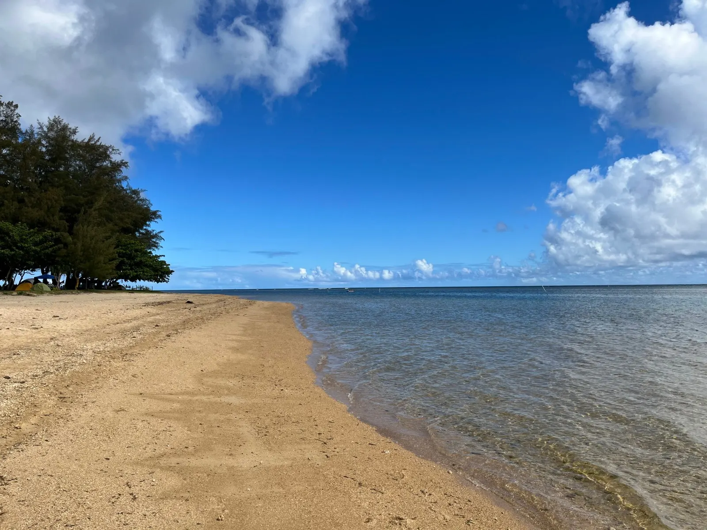
Go in the morning for less wind and low tide, and be sure to check the weather and tide conditions before going. To get there, don’t go all the way to the end of the road as Google Maps will tell you; stop where you see a camping ground and a row of tents. At the beach, you’ll see a boat ramp. Snorkel by the edge of reef to the right of the boat ramp. The water was pretty murky that morning, so I could only see a few feet right in front of me. We didn’t find the “cleaning station” by the reef where apparently the turtles get cleaned by fish, but I did come across a honu! Two other people had seen it and called us over. I couldn’t see it very clearly because the water was so clouded, but later I came back and found it again. It was so large and majestic, with a beautiful striped pattern on its head and flippers. It was sitting peacefully on the floor, nipping at grass on the sea floor. It’s illegal to touch a honu so keep your hands by your side, and if you are fortunate enough to see turtles being cleaned don’t bother them. However, apparently they like to be talked to!
If you go to Tunnels Beach, make sure the swell isn’t over 5 ft that day. It could actually be 3x as big, e.g. if it’s an 8 ft day it could actually go up to 24 ft! And stay next to the reef. You might also see reef sharks here (but don’t worry, they don’t hurt you). People have had to be rescued here because the current carried them out of the reef and into the open ocean, so just be careful!
Helicopter Ride: Mauna Loa Helicopter Tours
There are a few good helicopter tour options, but we chose Mauna Loa because we wanted a private, doors-off experience (would highly recommend!). It’s a 1-hour drive from Anini Beach, right near the Lihue Airport, so plan accordingly.
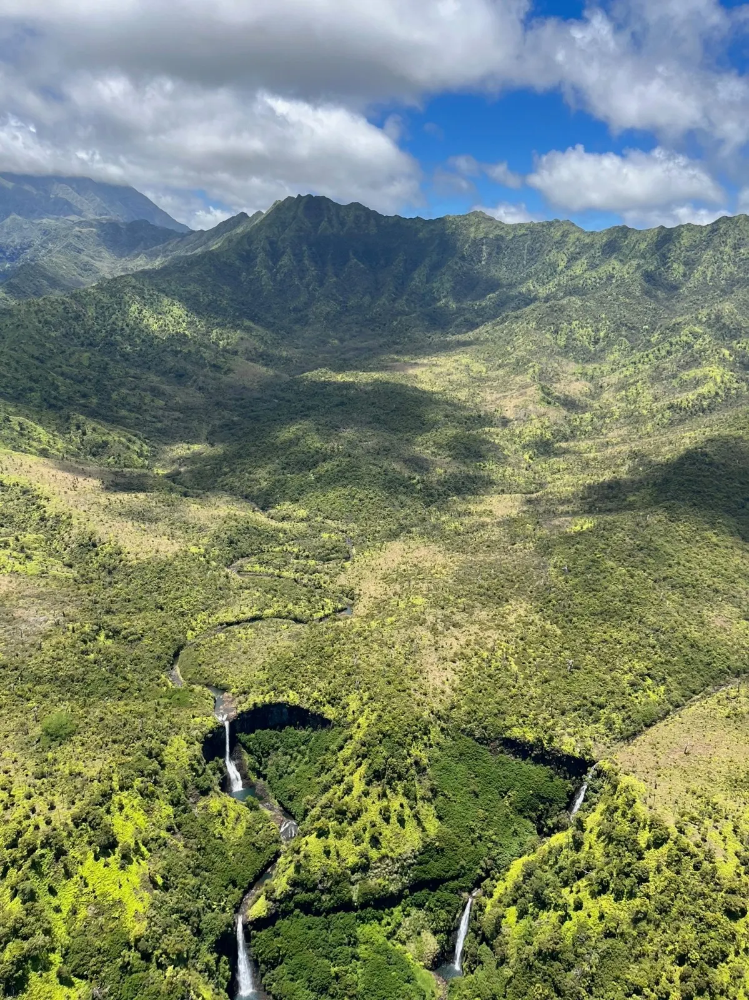
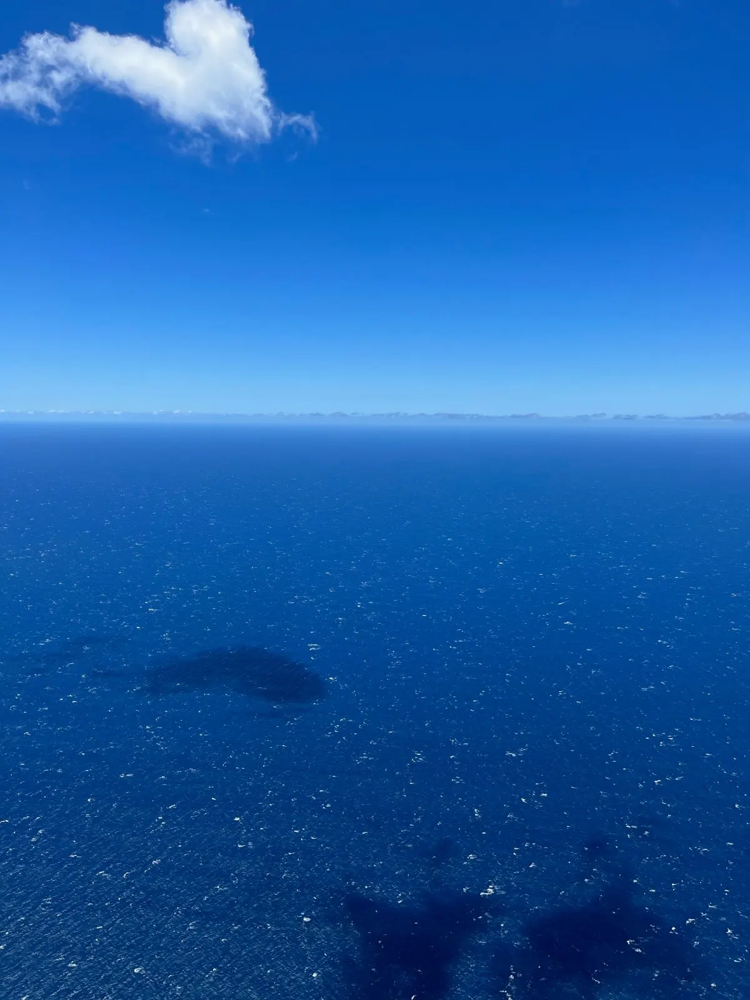
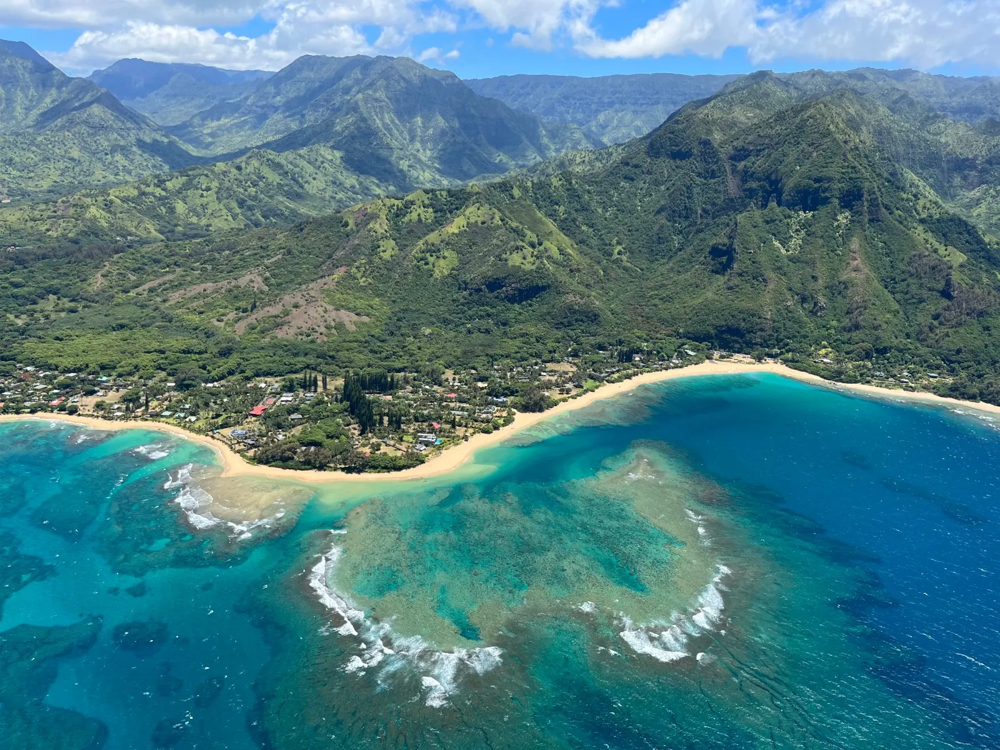
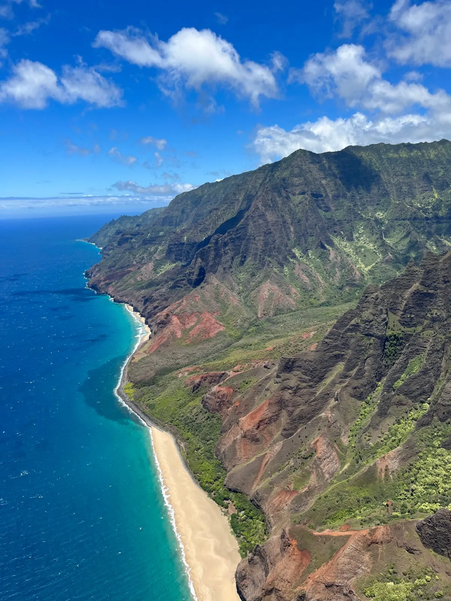
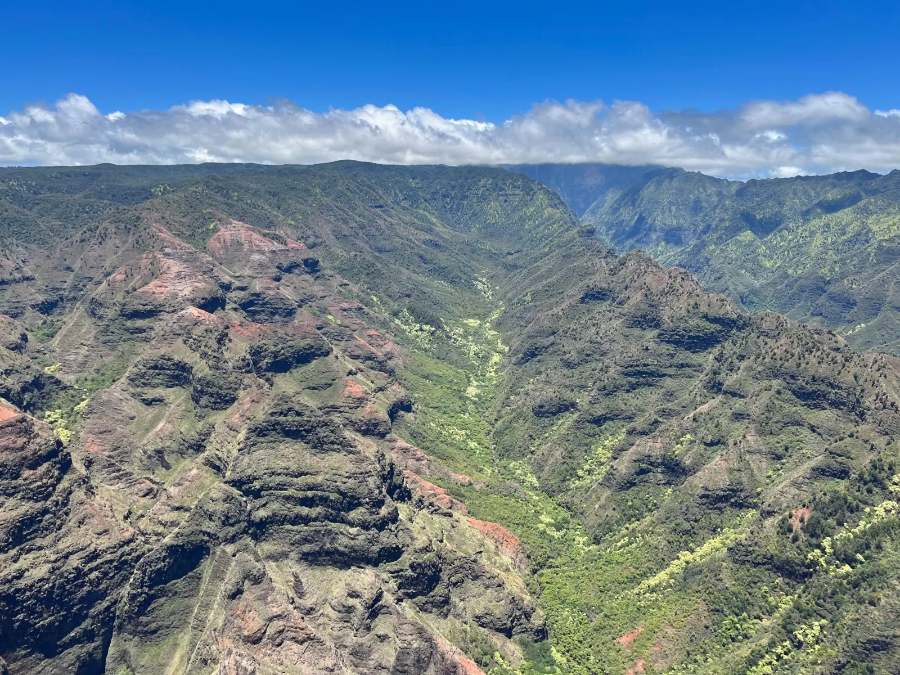
The view up there — of the remote waterfalls at the Waialeale Crater, the Waimea Canyon, the Na Pali Coast views — was incredible and mind-blowing, and the ocean was so amazingly and deeply blue, blending into the sky in a beautifully blue gradient. Unfortunately I got pretty motion sick, but even so I would say it was worth it. If you are prone to motion sickness I would recommend letting the pilot know and asking them to do slower/fewer turns. Also keep your gaze on the horizon and try to avoid looking down (which I’ll admit is hard as the views are incredible!). I also read that it might be helpful to chew on a ginger chew before or during the tour. I personally thought one hour was pretty long, I think a 30-minute ride would’ve been sufficient to see the incredible views. I would highly recommend doing a doors-off tour though — the wind is very strong (you’ll feel the force as soon as you stick your hand a bit out of the helicopter) but refreshing, and you get better pictures and videos without a glass window in the way.
Koloa
- Tree Tunnel: you’ll pass through this on the way to Koloa, but it’s a cool part to drive through because the trees along the road meet up in the middle and create a mini tunnel.
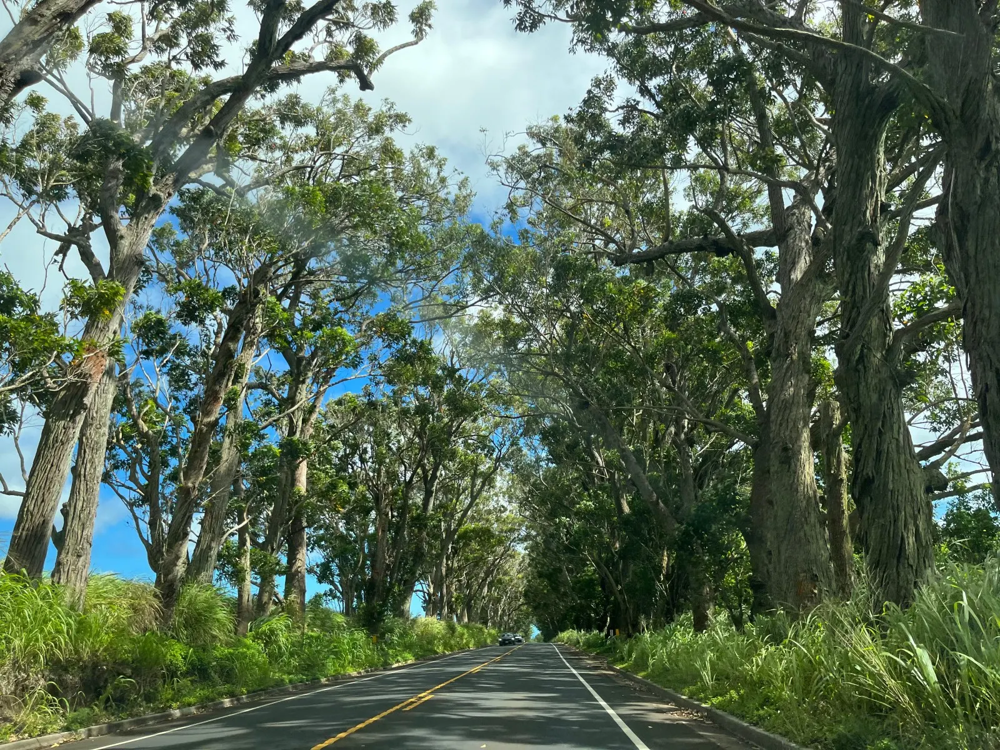
- Poipu Beach: great beach for napping and relaxing after an event-filled day. Went to Papalani Gelato (try macadamia nut!) — since we were waiting for our dinner reservation and had time to spare we walked, though it’s a 30 minute walk and the roads aren’t the greatest for pedestrians.
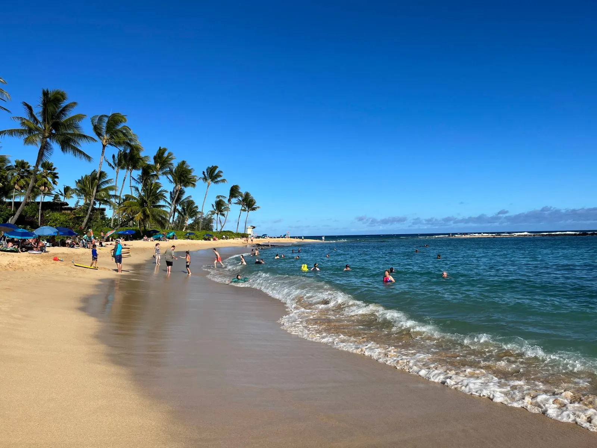
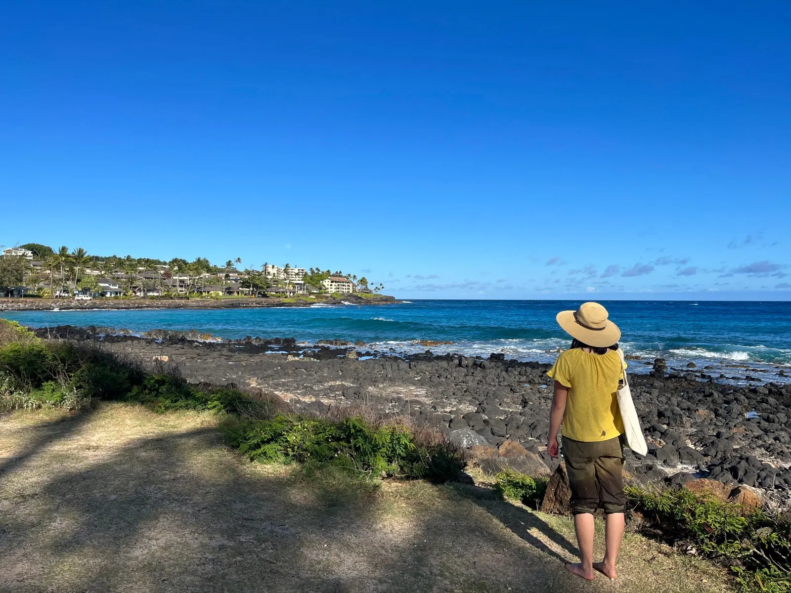
- Dinner: The Beach House. Popular spot for great food right by the beach. Make reservations ahead of time, especially if you’re going on a weekend. Would recommend their seafood linguine, which came with a selection of lobster, mahi-mahi, marlin, and seared ahi.
Day Two: Kalalau Trail – Ha’ena State Park
Would recommend starting this hike early in the morning, as it’s 2 miles to Hanakapi’ai Beach + 2 miles to the Hanakapi’ai waterfall (8-mile round trip, ~6 hours). Visitors must make reservations beforehand to enter the park, so plan ahead! There’s a $35 fee but it goes towards maintaining the park for visitors like us to enjoy — we took the shuttle into the park and had a good experience with it. You don’t need to get the permit unless you plan on backpacking and hiking further.
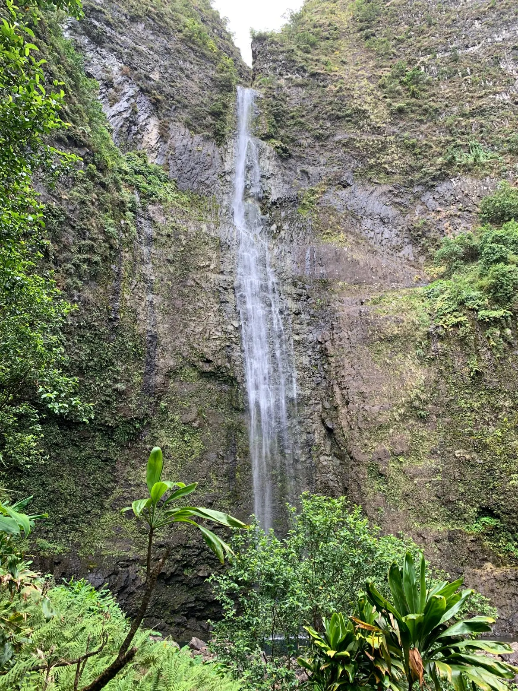
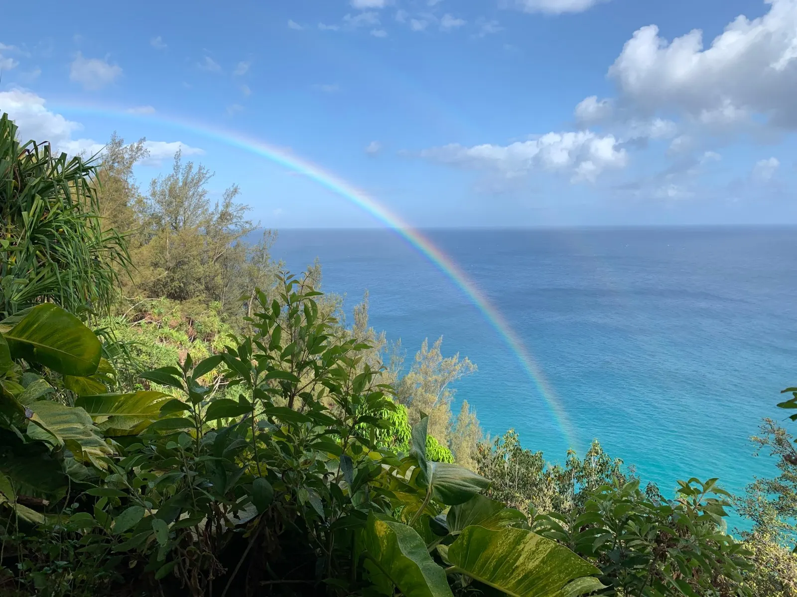
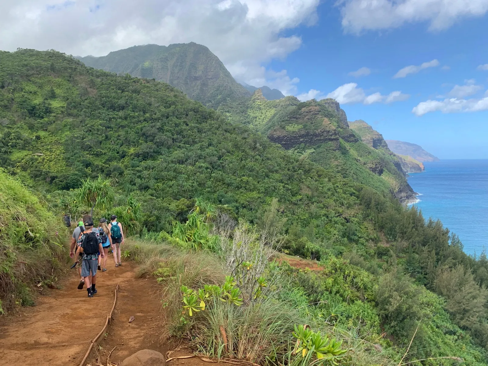
The hike took us the whole day and we wanted to give ourselves plenty of time to return the rental car and get to the airport, but if I had an extra day I would’ve also done these things:
- Queens Bath: 1 mi, 1-hr hike to tidal pool
- Hanalei Town
- Hanalei Valley Lookout
- Shave Ice: Wishing Well Shave Ice, Jo Jo’s Shave Ice
- Kapa’a Town: Kiko (handmade gifts), Wailua Shave Ice
- More Hikes
- North Side: Wai Koa Loop: 4 mi, 2 hrs, easy/moderate. Okolehao Trail: 3 mi, 2 hrs, moderate, great views of the valley and Na Pali coast. If want more, continue on Hihimanu Ridge Hike
- East Side: Ho’opi’i Trail: 2.4 mi, 1 hr, moderate, Upper and Lower Falls, Jurassic Park was filmed here! Sleeping Giant Hike: 3.2 mi, 2 hrs, moderate/difficult, great ocean and valley views